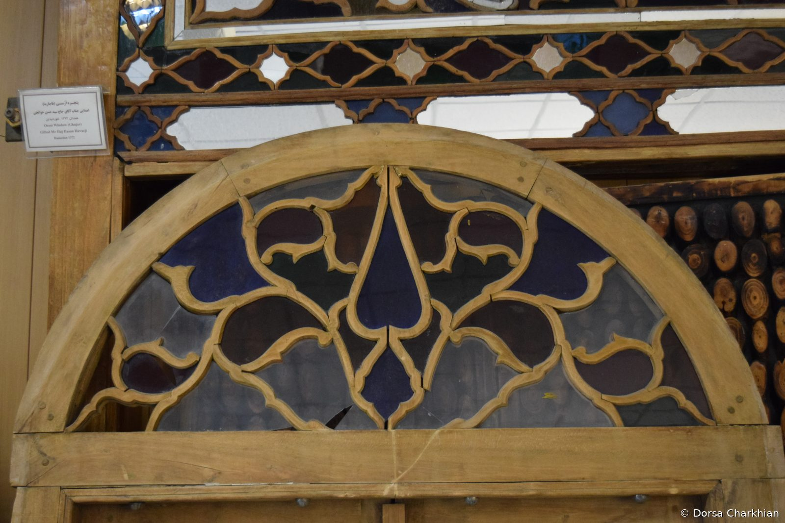
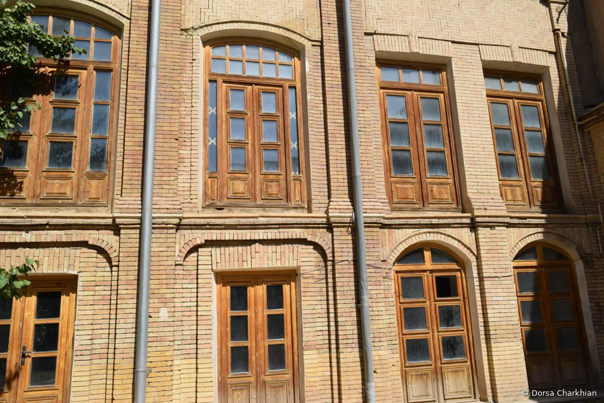
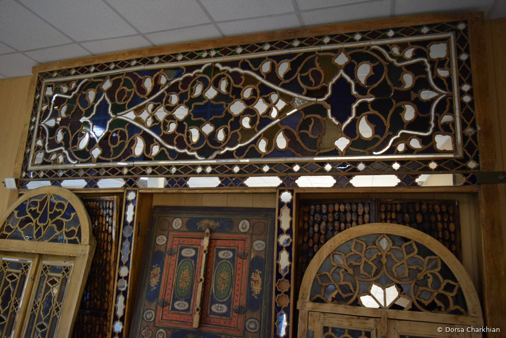
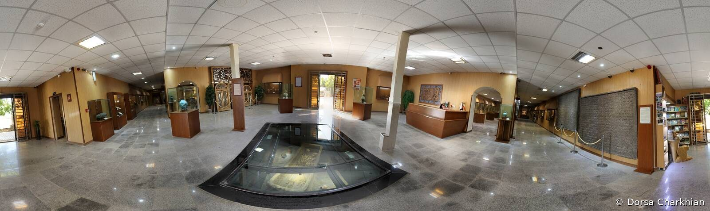
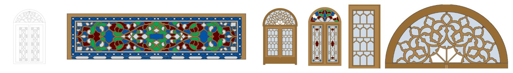
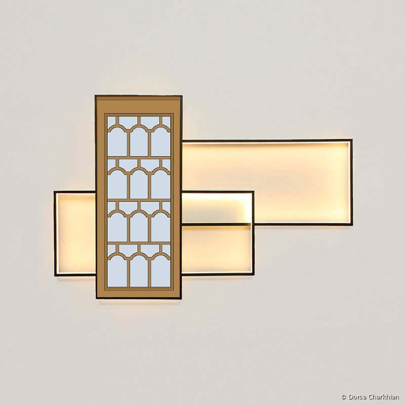
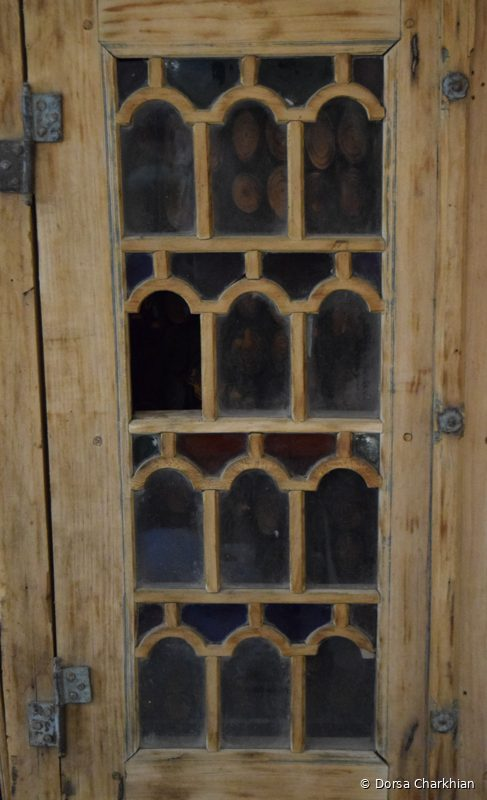

Design practice · BFA thesis
Orosi: from historic windows to modern lighting
Field research on Qajar-era sash windows, translated into a contemporary wooden light.
Overview
Orosi are the sliding, latticed sash windows of traditional Iranian architecture, made of carved wood and colored glass. They are among the most distinctive elements of Iranian craft: they bring light into a room and color it at the same time. Many have been damaged or removed over time. My BFA thesis documented the orosi held at the Hegmataneh Museum in Hamedan and asked how their patterns could stay alive in contemporary design, through wooden lighting.

Context
The Qajar period (1789–1925) was a high point for orosi. As contact with Europe grew, Qajar art held on to traditional norms while absorbing new influences, and architecture and its ornaments changed with it. Orosi were valued for both function and decoration, which made them a clear record of these shifts.
Research
The research was historical and descriptive. I combined library sources with in-person visits to the buildings and the museum, where I photographed each orosi, estimated where it originally stood, and analyzed its structure and motifs.



Finding
Over the Qajar period, orosi patterns shifted from geometric designs toward arabesque (eslimi) and naturalistic motifs, a clear break from earlier periods.
I redrew the patterns to study them closely and to prepare them as a design language rather than only a historical record.

Design response
The thesis also examined how light affects people, from wellbeing and mood to how we relate to a space. Building on that, I translated a geometric orosi lattice into a wooden wall light: layered rectangular frames that hold the pattern and let light pass through it, so the window’s original role, filtering and coloring light, continues in a new object.


What stayed with me
This project is where my approach began: start from a careful study of what people made and lived with, then design something that carries that knowledge forward. I now apply the same thinking to technology, asking how cultural knowledge can shape the systems people use.